Open this file from the repo (audit/owner-review.html) so the image paths resolve. Answers save in this browser as you type. "Copy all comments" copies every item that has a verdict or a comment. Background: docs/VERIFICATION.md, docs/IMAGE-REVIEW.md.
AI images
1. luces-niebla-faros img-luces-niebla-faros
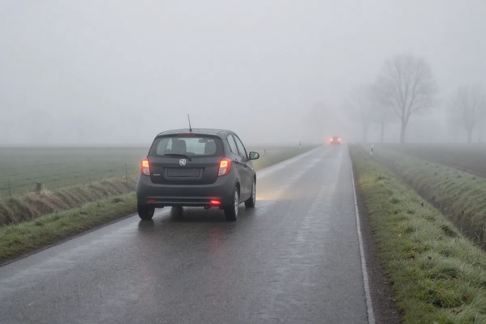
- Lesson: `luces/02-niebla-y-estacionado`, after the rear-fog-light rule.
- Meant to show: correct use of the rear fog light (mistachterlicht) in thick fog.
- Must be true: visibility clearly under 50 m (the legal condition, RVV 34.2); one rear fog light lit on the car ahead; dipped lights on.
- Unsure: trees and an oncoming car are visible fairly far off, so visibility may read as more than 50 m, which would show the light used when it isn't allowed. The car's plate is a dark blank, not Dutch yellow.
Does the image show correct, lawful practice as described? OK / reroll / drop?
2. luces-averia-triangulo img-luces-averia-triangulo
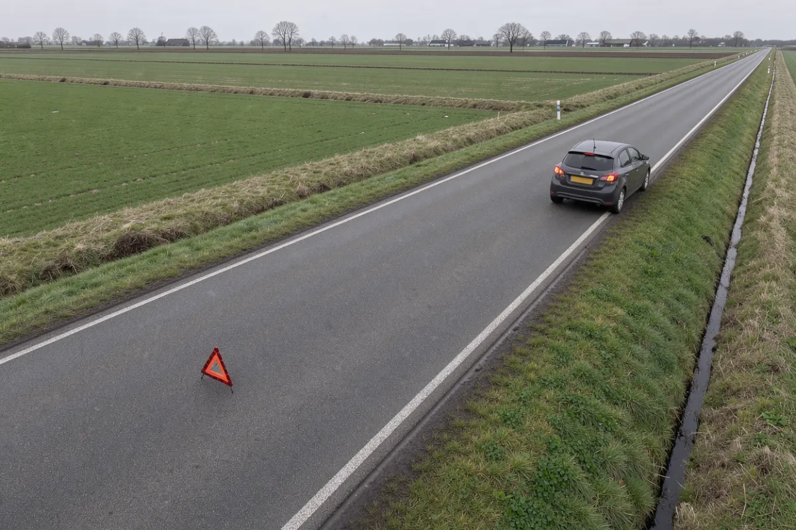
- Lesson: `luces/04-averia-emergencia`, after "a unos 30 metros".
- Meant to show: correct placement of the warning triangle behind a broken-down car.
- Must be true: triangle behind the car (we see the car's rear), facing approaching traffic, in the same lane, about 30 m back; hazard lights on.
- Unsure: perspective makes the distance hard to judge (I read it as 20-30 m). The car stands on the road at the edge, not on the verge.
Does the image show correct, lawful practice as described? OK / reroll / drop?
3. conductor-dode-hoek-camion img-conductor-dode-hoek-camion
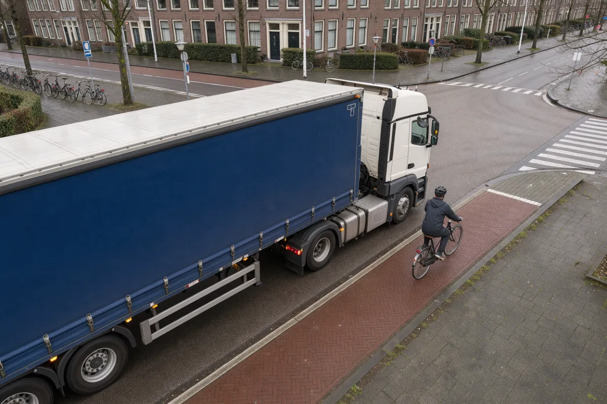
- Lesson: `conductor/05-usuarios-vulnerables`, "Ángulo muerto".
- Meant to show: a **hazard**: a cyclist beside the cab of a lorry at a junction, in the zone the lorry driver can't see.
- Must be true: the cyclist is on their own path, right next to the cab's right side; the lorry could turn right across them.
- Unsure: the cyclist is near the front corner rather than level with the door, and the lorry isn't visibly signalling or turning.
Does the image show correct, lawful practice as described? OK / reroll / drop?
4. conductor-asiento-infantil img-conductor-asiento-infantil
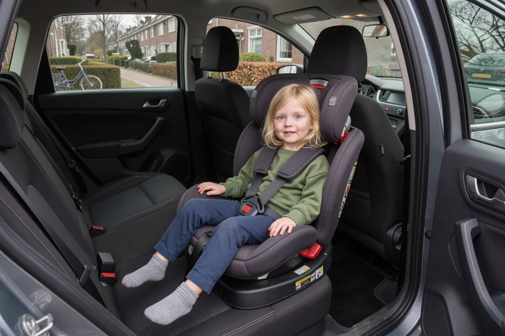
- Lesson: `conductor/04-cinturon-ninos`, after the RVV 59.1 rule.
- Meant to show: a young child correctly secured in a forward-facing child seat on the rear seat.
- Must be true: harness over both shoulders and buckled, chest clip at chest height, seat on a rear seat.
- Unsure: nothing specific; check that the harness routing looks right to you.
Does the image show correct, lawful practice as described? OK / reroll / drop?
5. leyes-documentos-control img-leyes-documentos-control
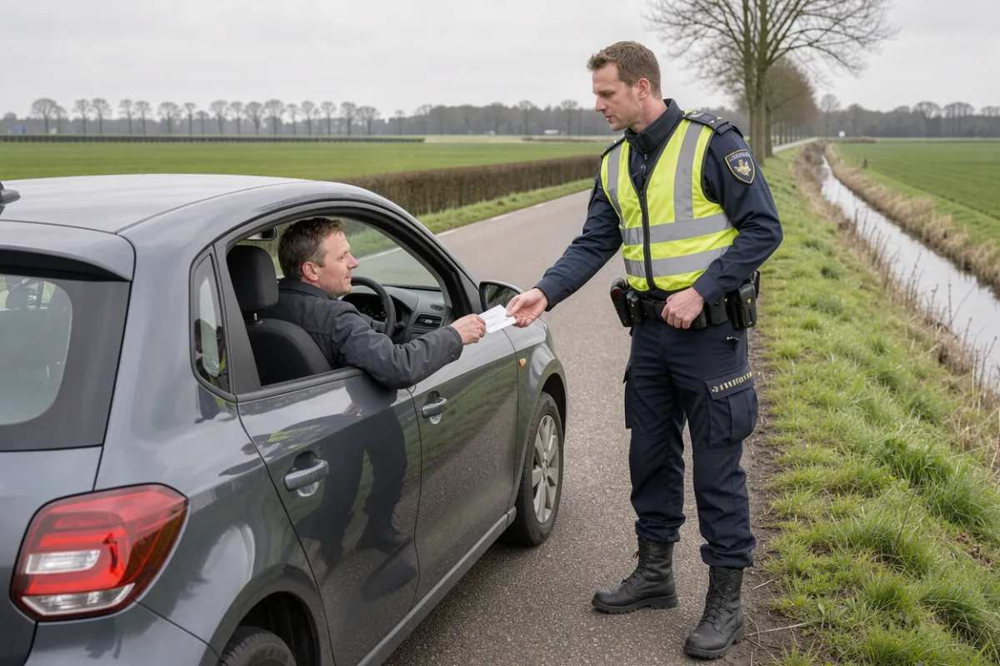
- Lesson: `leyes/03-documentos-control`, after "Mostrar documentos a la primera orden".
- Meant to show: a normal roadside check: the driver stopped and hands a document to a police officer.
- Must be true: car stopped at the roadside, officer at the driver's window, driver cooperating.
- Unsure: the vest is a generic yellow, not the Dutch police livery (blue-yellow with POLITIE), so it reads as "a police officer", not specifically Dutch.
Does the image show correct, lawful practice as described? OK / reroll / drop?
6. vehiculo-banden-profiel img-vehiculo-banden-profiel
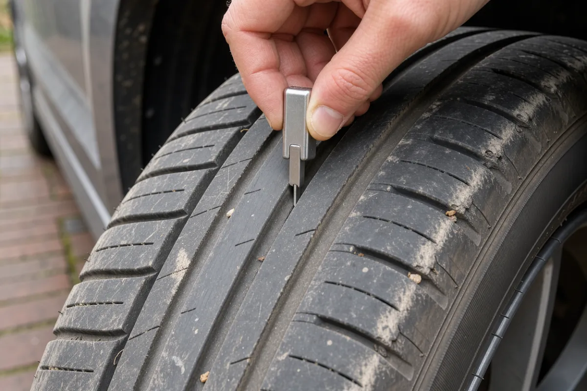
- Lesson: `vehiculo/01-neumaticos`, after the 1.6 mm warning.
- Meant to show: how to measure tread depth with a gauge.
- Must be true: tyre mounted on a car; the gauge's pin in a main groove, held upright.
- Unsure: the gauge is simplified (no visible scale). It does not show a worn tyre, and the caption doesn't claim one.
Does the image show correct, lawful practice as described? OK / reroll / drop?
7. vehiculo-lading-fietsdrager img-vehiculo-lading-fietsdrager
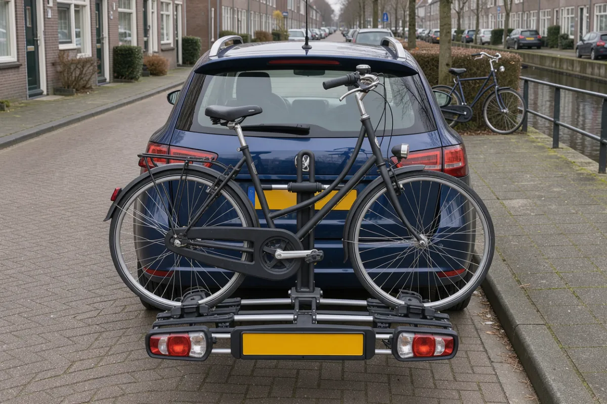
- Lesson: `vehiculo/06-carga-remolque`, after the rv 5.18.7 carrier rule.
- Meant to show: a correctly loaded tow-bar bike carrier that covers the car's lights and so has its own.
- Must be true: one bike, whole, fixed in the wheel trays and clamped by the frame; the carrier has its own rear lights and a (blank) plate holder; nothing sticks out more than 20 cm at the sides.
- Unsure: the frame clamp's join to the bike is a bit soft; the mount onto the tow ball is hidden.
Does the image show correct, lawful practice as described? OK / reroll / drop?
8. vehiculo-aanhangwagen img-vehiculo-aanhangwagen
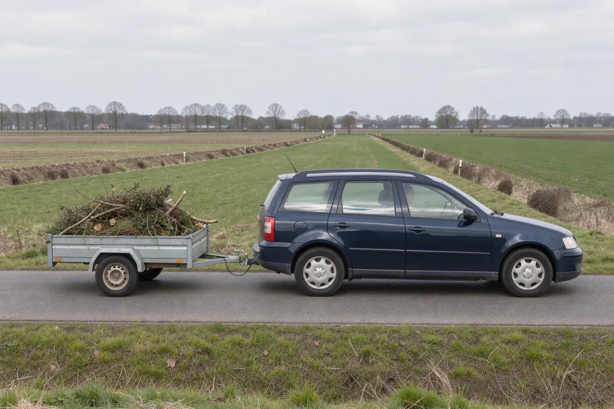
- Lesson: `vehiculo/06-carga-remolque`, after "Luces del remolque".
- Meant to show: a correctly coupled light trailer being towed.
- Must be true: one trailer; coupling on the tow ball; light cable plugged in; only the trailer's own wheels on the road (no jockey wheel down); load not sticking out.
- Unsure: twigs stick up above the sides (not tied down or covered). rv 5.18.6/2 requires loose load that can blow off to be covered, so this may show a load that isn't secured.
Does the image show correct, lawful practice as described? OK / reroll / drop?
9. especiales-tunnel img-especiales-tunnel
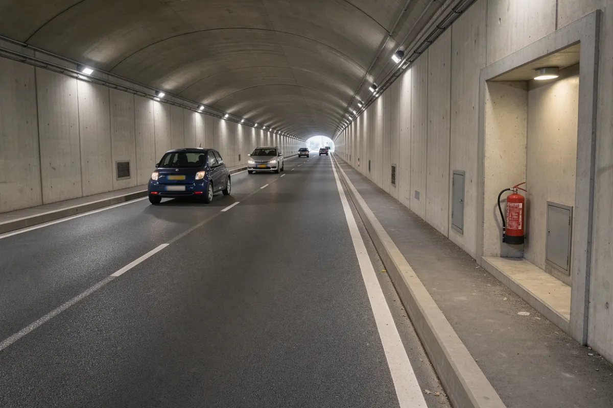
- Lesson: `especiales/05-tunel`, after the fire rules.
- Meant to show: an emergency alcove with a fire extinguisher in a road tunnel.
- Must be true: lit recess in the wall with an extinguisher; normal traffic.
- Unsure: it's a two-way tunnel with a **dashed** centre line, while the lesson says never to cross the centre line. The alcove has no emergency phone.
Does the image show correct, lawful practice as described? OK / reroll / drop?
10. especiales-overweg img-especiales-overweg
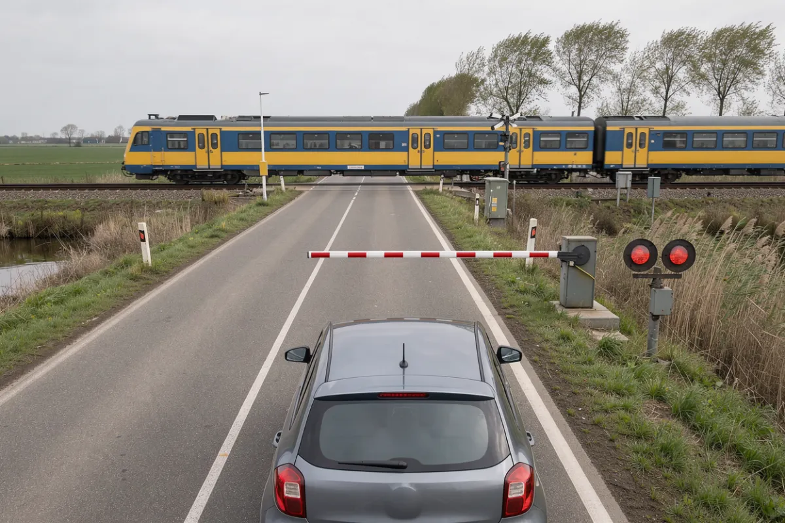
- Lesson: `especiales/07-overweg`, AHOB section.
- Meant to show: correct waiting at an AHOB crossing: half barrier down over our lane, red lights on, train passing, car stopped in its lane well before the barrier.
- Must be true: half barrier covers only the right lane; two red lights lit; car not on the crossing and not beside the barrier.
- Unsure: the lights can't show that they flash (a still image).
Does the image show correct, lawful practice as described? OK / reroll / drop?
11. especiales-erf img-especiales-erf
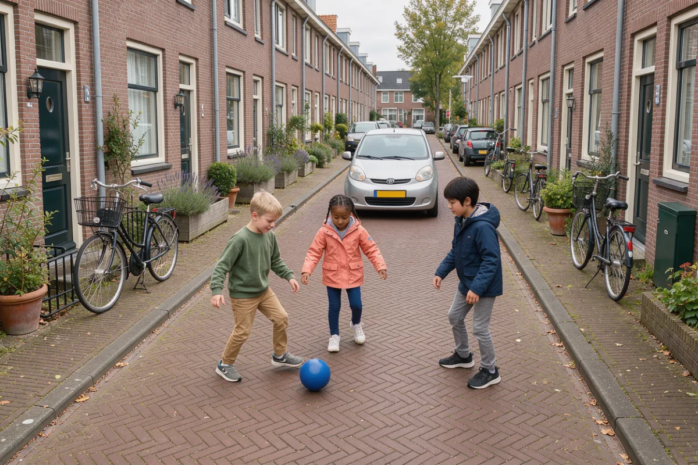
- Lesson: `especiales/08-erf-halte-brug`, after the erf rules.
- Meant to show: an erf (woonerf): pedestrians, including children, using the whole street, and a car moving at walking pace.
- Must be true: children on the carriageway is normal here; the car is slow and giving them room.
- Unsure: the street has raised curbs and sidewalks, which undercuts the shared-space point. The car looks close to the children and could read as about to drive into them.
Does the image show correct, lawful practice as described? OK / reroll / drop?
Official material
Hand-signal crops (senales/12) gestures
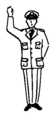
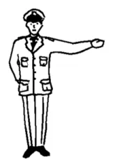
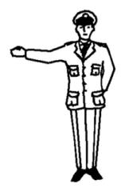
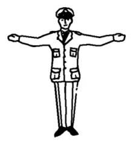
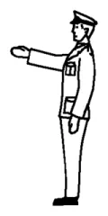
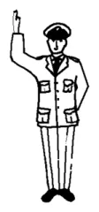
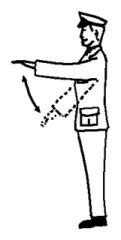
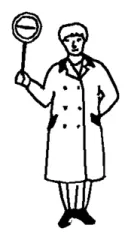
Cropped from RVV bijlage 2 (label text whitened). Captions on the site are the bijlage wording plus a Spanish translation.
Tip shown to learners, marked as our reading: "si ves el pecho o la espalda del agente con el brazo o los brazos extendidos a los lados, paras. Si llegas por un costado, mira si el agente te indica algo más (gesto 5)."
Do the crops match their captions, and is the Tip a fair reading?
Sign C5 "Inrijden toegestaan" c5
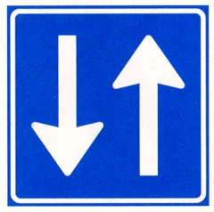
The bijlage says only "Inrijden toegestaan". The image shows two opposing arrows, which suggests two-way traffic or oncoming traffic. The sign gloss used to say "sentido único en esta dirección"; I changed it to just "Se permite entrar" because the image contradicts one-way. The lesson doesn't say when C5 is used.
Is "se permite entrar" enough, or should the lesson explain where you meet C5 (e.g. a one-way street open to some traffic)?
B3-B5 operative meaning (prioridad/03) b3b5
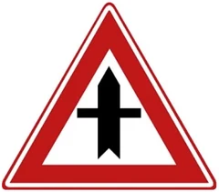
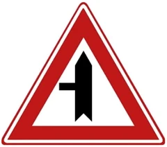
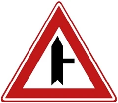
The bijlage only names them (Voorrangskruispunt; zijweg links/rechts). The lesson adds, outside the cited Rule: "si ves estas señales en tu vía, tú tienes prioridad en el cruce que viene, y los que vienen de las vías laterales deben cederte el paso." The thick line in the drawing is your road.
Correct reading?
Secondary content
Shark's teeth direction (prioridad/04) teeth
Amber, cite general: "Las puntas de los triángulos apuntan hacia quien debe ceder el paso: hacia ti, si llegas de frente a ellos. Las bases de los triángulos forman una línea recta a lo ancho de tu carril, paralela a la vía que tiene prioridad." Plus quiz haaientanden-direccion.
Matches your description?
APK intervals (leyes/04) apk
Amber, cite ANWB: petrol/electric (new since 2005) 4 years, then every 2, yearly from 8 years; diesel/LPG/other 3 years then yearly; very old cars differ; up to 2 months early keeps the expiry date. Quiz kenteken-apk-plazo (answer 4).
OK as is? (RDW would be the authoritative source.)
Fines and beginner points (leyes/06) fines
Amber. Wet Mulder fines go to the kentekenhouder if you're not stopped, CJIB collects, serious cases go to the OM (cite general). No general points system; on the beginnersrijbewijs a serious offence gives a strafpunt and at the 2nd the OM reports you to the CBR (cite Rijksoverheid). The length of the beginner period isn't stated.
OK? Should the beginner period (5 years?) be stated?
How to help at an accident (luces/05) accident
Amber, cite general, 4 steps: secure the scene and hazard lights; call 112 with the hectometerbordje; don't move the injured unless in danger, CPR if trained; damage only: move the cars and fill in the schadeformulier together. Also Sr art. 450 (failing to help a person in mortal danger is punishable if they die and help was possible without reasonable danger). Quizzes accidente-ayuda-112 (order) and accidente-ayuda-mover.
Steps and order OK?
Decisions
Secondary questions in the mock exam exam-secondary
The 6 secondary questions are currently eligible for the mock exam. Option: set exam: false on them so the exam only tests law/CBR-sourced content.
Keep in exam, or exclude?
Which web sources count as "secondary" anwb-vvn
Only the four topics above are flagged. Other non-law pages are cited unflagged: Rijkswaterstaat (government), CBR (exam body), but also ANWB tunnel and VVN turborotonde (non-government). Flagging those too would turn 2 more lessons amber.
Flag ANWB/VVN as secondary too?
Interpretation
Rotonde without B6 (especiales/06) rotonde
The lesson says: "Sin B6, se aplican las reglas generales de prioridad (capítulo 4)", i.e. traffic from the right first. True under RVV, but the CBR describes a rotonde as "anders dan een kruispunt", and nearly every Dutch rotonde has B6 anyway.
Keep as is?
Rotonde lanes and overtaking (posicion/06) posicion06
Now split into two bullets: motor vehicles and mopeds may drive other than on the right side of the carriageway just before and on a rotonde (rvv:47); all drivers may overtake on the right there (rvv:48). The old text merged them, implying art. 48 applies only to motor vehicles.
OK?
Tram diagrams (prioridad/10) tram
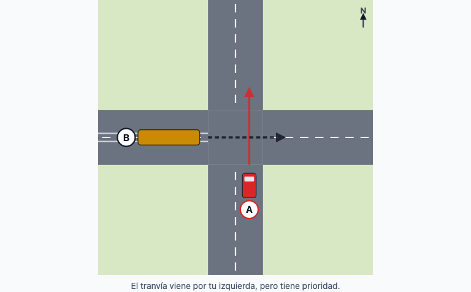
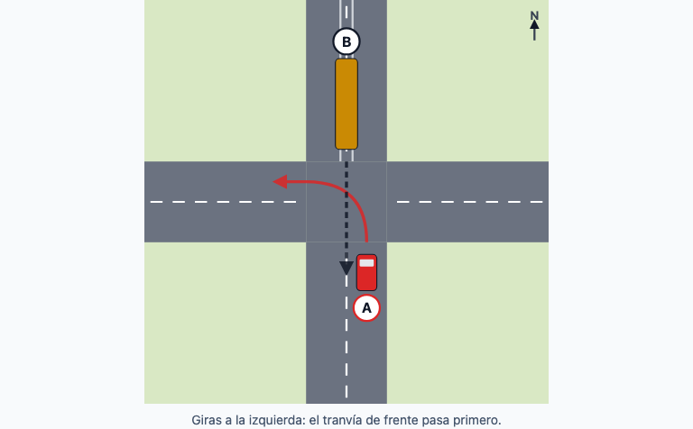
Positions and paths match the text. The rails stop at the junction edge and don't continue across.
Good enough, or fix the rails?
Site
About page text about
New sections: Objetivo, Cómo enseña, Quién lo hizo y cómo se revisó. The old text said "lo hacen voluntarios"; it now says: "Lo escribió Topher Hunt con ayuda de inteligencia artificial (Claude), a partir del texto de la ley neerlandesa y del material publicado por el CBR. Cada regla y cada pregunta se comprobaron contra su fuente, también con revisores automáticos independientes. Todavía no lo ha revisado un instructor de autoescuela ni un experto." Footer and About end with "Hecho con 💙 por Topher Hunt" linked to topherhunt.com, plus the repo link. View it at /es/acerca/.
Happy with how the AI authorship is stated?